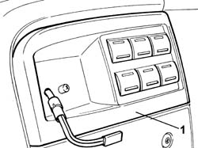
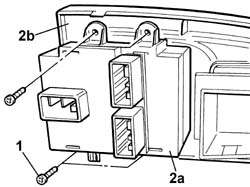

7040A79 TRIM FOR WEBASTO DIGITAL TIMER AND OPTIONAL SWITCH PANEL - R.R.
- Path
- Procedures > 70 FITTINGS > 7040 BODY INTERIOR FITTINGS AND TRIM > 7040A PASSENGER COMPARTMENT TRIM > 7040A79 TRIM FOR WEBASTO DIGITAL TIMER AND OPTIONAL SWITCH PANEL - R.R.
- Kind
- repair procedure (removal / refitting; the operation number is the code)
- Applies to
- all engines; all production periods
- Interactive page
- https://sloeber94.github.io/elrnDB-fDct/en/#/244001510
Applies to: all engines; all production periods
 Removing
Removing
 Refitting
RefittingOp. 5020M08 TIMER FOR PROGRAMMING ADDITIONAL INDEPENDENT HEATER - R.R.
1. Using a suitable tool, extract the trim complete with switch unit for options
- Disconnect the electrical connections for the optional switch panel.
Description | Connector | |
|---|---|---|
Additional control panel | H115 |
- Release the wiring for the digital timer and remove the trim.

Applies to: all engines; all production periods
1. Undo the retaining bolts.
2. Separate the optional switch panel (2a) from the trim (2b).

Applies to: all engines; all production periods
Refitting
Removing- Position the optional switch panel on the trim and tighten the fixing bolts.
- Position the digital timer wiring inside the special housing.
- Connect the electrical connections for the optional switch panel.
Description | Connector | |
|---|---|---|
Additional control panel | H115 |
- Position the trim complete with optional switch panel in the housing and secure it.
Op. 5020M08 TIMER FOR PROGRAMMING ADDITIONAL INDEPENDENT HEATER - R.R.